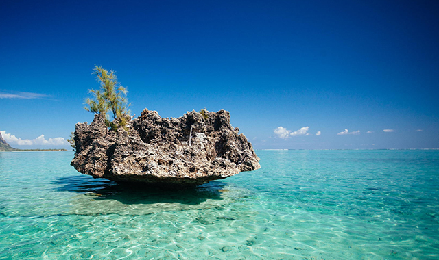
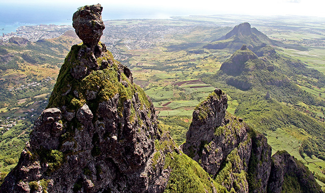
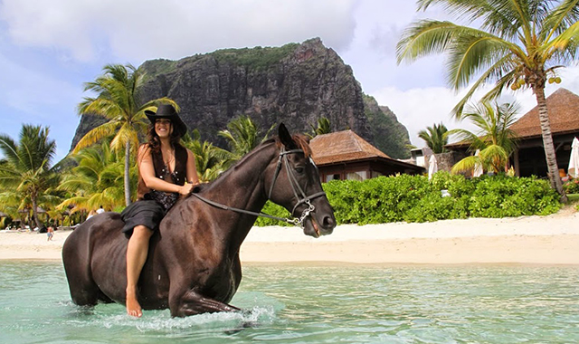
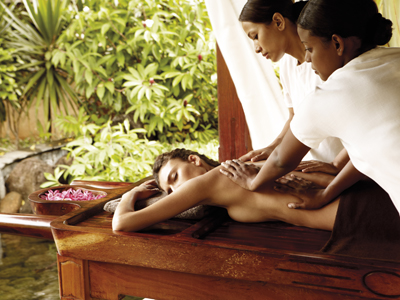

l’île Maurice est devenue une destination touristique très appréciée et un bon nombre d’hôtels
de luxe ont vu le jour tout autour de ses côtes azures. Maurice est également connu pour les
différentes cultures qui composent sa belle population. Cette diversité culturelle fait aussi
partie de l’attrait touristique du pays car il imprègne tous les aspects de la vie mauricienne
tels que les vêtements, la gastronomie, architecture, etc…

LES PLAGES
Les plages mauriciennes sont des vraies cartes postales vivantes. Avec 330 kilomètres de littoral,
’île Maurice compte à elle seule plus d’une centaine de plages. Il y a une plage pour tout à Maurice,
baignade, activités nautiques, plongée, snorkeling, surf, kitesurf et même des plages désertes, à vous
de choisir

MERVEILLES NATURELLES
Chamarel,E, Le Morne Brabant, Rochester Falls, La roche qui pleure, le SSR Botanical Garden, les sept
cascades, la liste est longue, mais vous l’aurez compris, l’île Maurice c’est aussi un musée naturel à
ciel ouvert. De plus, certains de ces sites comme le Château de Labourdonnais et jardin botanique SSR
de Pamplemousses sont intimement liées à l’histoire de l’île. Si vous êtes amateur de plantes ou
randonneur dans l’âme, l’île va certainement vous plaire.

ACTIVITES SPORTIVE
L’île Maurice est abrite plusieurs parcours de golf de classe mondiale, conçus par certains des meilleurs designers de parcours de golf au monde. La plupart des parcours se trouvent en pleine nature et sont souvent propriétés des hôtels de luxe, mais reste accessible aux visiteurs souhaitant pratiquer le golf. Le Club de Gymkhana à Vacoas abrite le plus ancien parcours de golf dans l’hémisphère Sud et est accessible au public.
La pêche sportive est aussi populaire à Maurice. Beaucoup de visiteurs se lancent dans cette excitante aventure contre les plus grands prédateurs comme le Marlin et l’Espadon. Au l’ouest, au sud et à l’est de l’île on peut aussi pratiquer bon nombre d’activités nautiques comme le surf, le kitesurf ou encore le parachutisme.

INCROYABLE HOSPITALITE
Le tourisme est une industrie importante à Maurice, un grand nombre d’hôtels de luxe ont émergés autour de l’île pour offrir la meilleure expérience aux visiteurs. Mais l’hospitalité ce n’est pas que les grands hôtels à Maurice, même pour les hôtels 4 étoiles et les villas vous êtes toujours sure de recevoir une hospitalité incroyable. La plupart de ces hôtels sont équipés de splendides piscines, d’excellents restaurants et de grands spas pour des vacances de rêve !